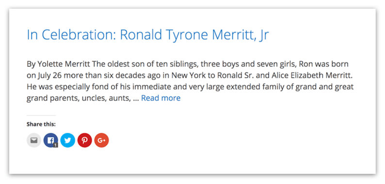
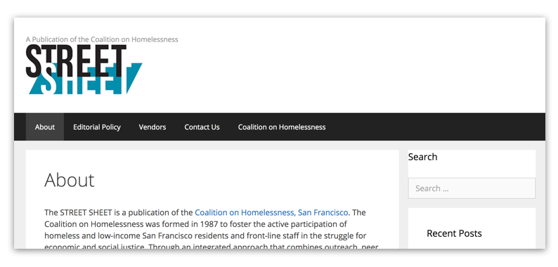
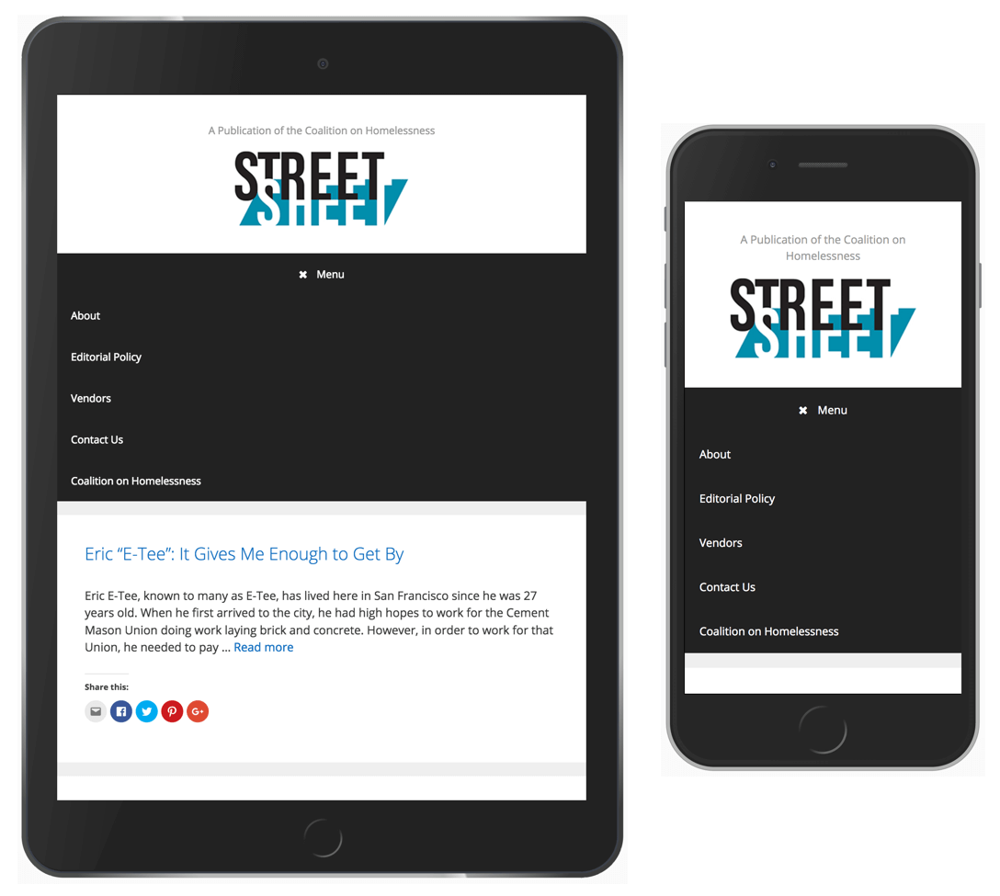
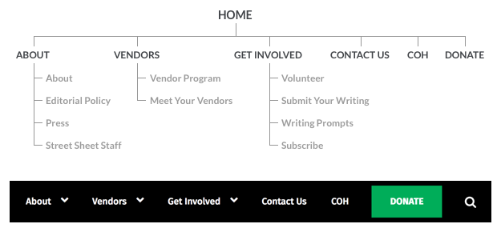
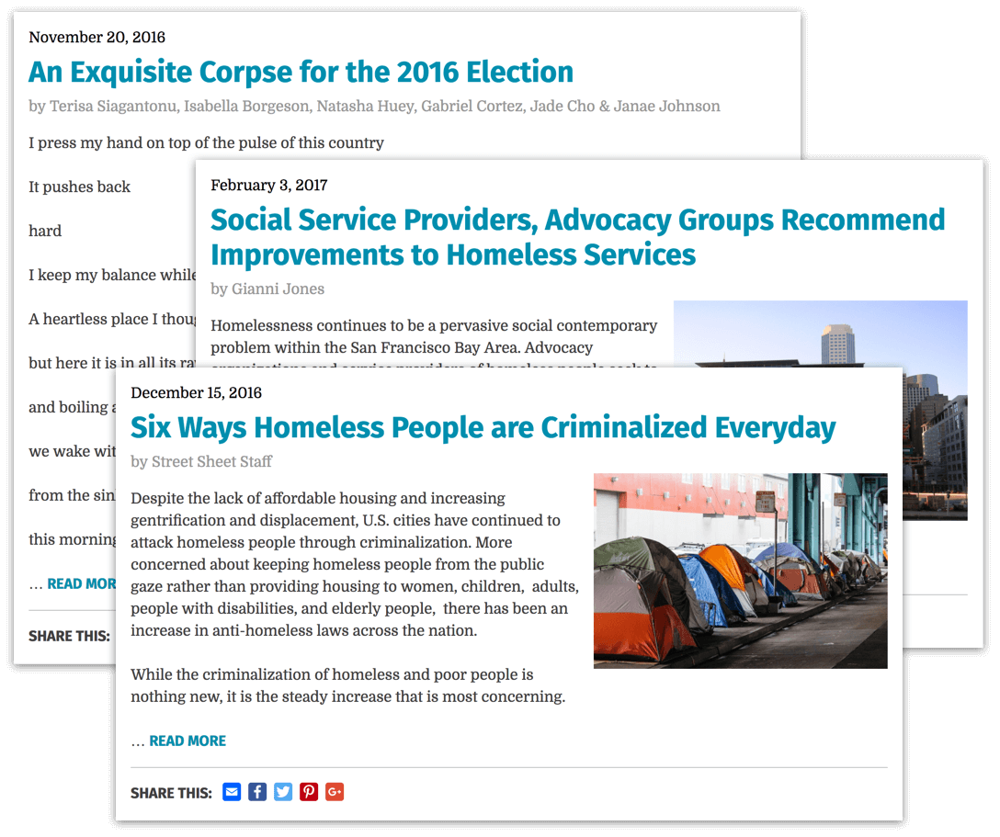
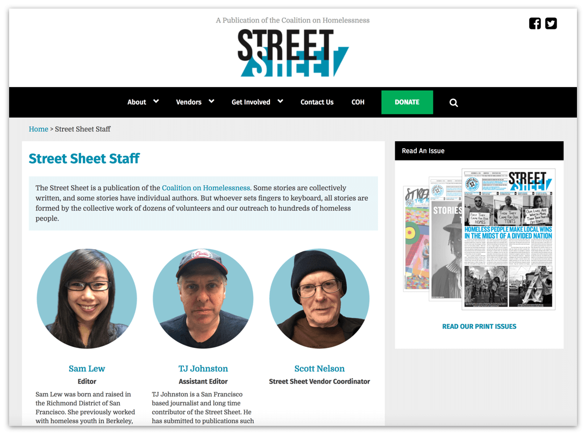

Street Sheet
Redesigning a non-profit newspaper's website
Street Sheet is a biweekly San Francisco newspaper that reaches 16,000 readers through 230 homeless or low-income vendors, who are not made to pay for the papers that they receive, and who keep all money they earn through Street Sheet distribution.
The organization wanted a website design that reflects the quality of their journalism, is easy to read and navigate, is visually appealing, and is a means of generating greater revenue through donations.
The Problems

Difficult to find information and take action.
Without information on how to volunteer or a donation button, it was unclear how a person might get involved in the organization's mission. Although they had a donation page on their parent organization's website that they could direct visitors to and ideas for a subscription service, they weren't sure how to incorporate both ideas into the site.
Articles lacked typographic hierarchy.
Dates, bylines, and article images were either missing or obscured by poor hierarchy and style.
There was a lack of information on impact, processes, and people.
Besides a single About page, the organization was missing out on an opportunity to highlight their staff members, past press, vendor success stories, and writing workshops.
Poor navigation & reading on smaller devices.
The site's navigation could only be accessed from the top of the page which was problematic when reading long articles. The site's layout and typography needed to be responsive to accomodate reading on all screen sizes.The Solution
Improved Navigation
Through discussions with stakeholders and Street Sheet readers, I was able to create a more intuitive site structure. Working with staff members, I helped them flesh out content for new pages.
Having a prominent Donate button and actionable links like "Get Involved" help to guide users who want to contribute to the organization's cause.
Consistent Article Formatting
It was important to the design that articles looked like news articles and not blog posts. I designed a consistent article style that included the date, article title, byline, and image thumbnails.
It was also important that the excerpt design allow for text formatting on different types of articles, i.e. poetry vs. a news piece.
Showcasing the Organization's Staff
While talking to Street Sheet readers, I learned that most people want to connect with the people who create and support the paper. Creating a Street Sheet Staff page recognizes the team and their hardwork as well as put a name and face to the organization.
Easier Reading Across Devices
 Reading on mobile versus desktop are completely different experiences and it was important that the typography and layout be responsive to accomodate both.
Reading on mobile versus desktop are completely different experiences and it was important that the typography and layout be responsive to accomodate both.
In addition, on smaller devices the navigation menu changes to a floating nav button in the bottom left corner. Next to it, a back to top button was added to save users from having to swipe back to the top. The placement of the buttons were based on the "thumb zone" (see, Steven Hoober's Designing Mobile Interfaces).